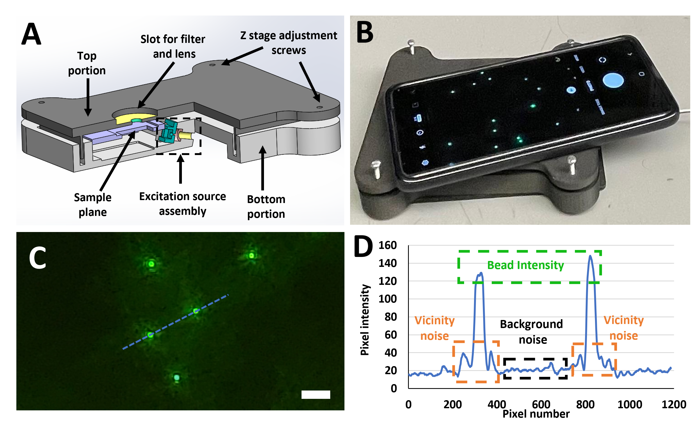
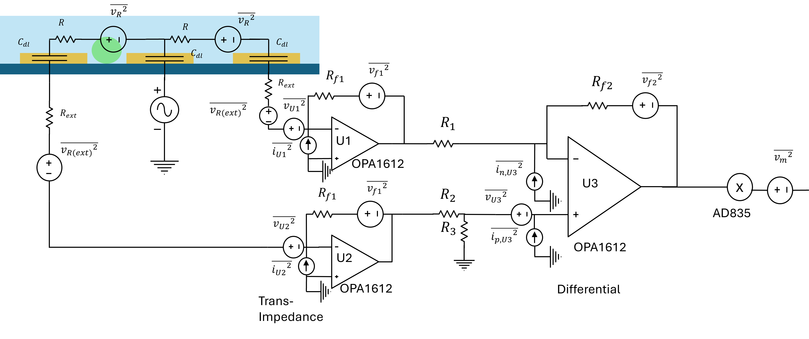
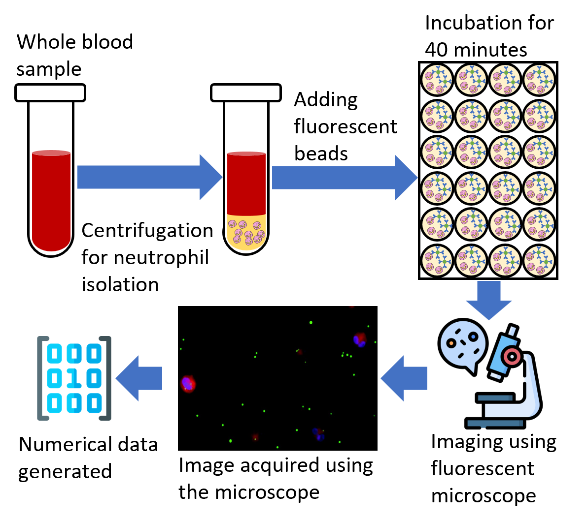
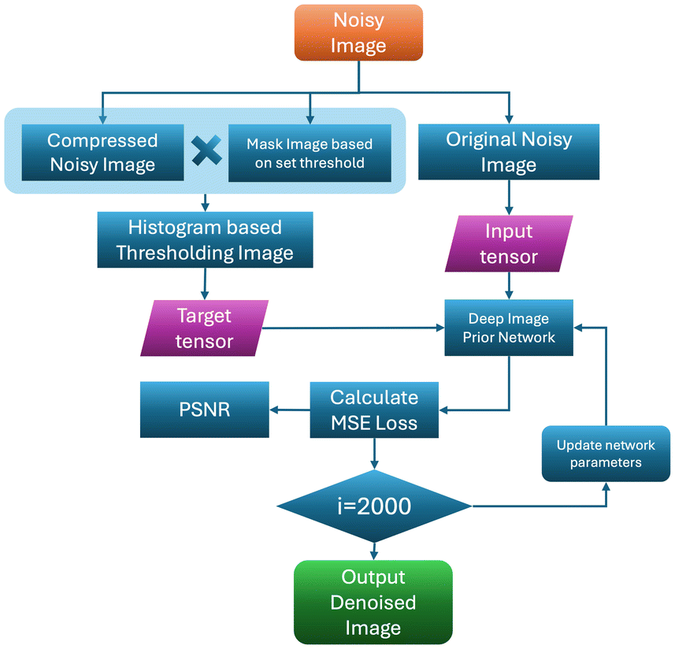
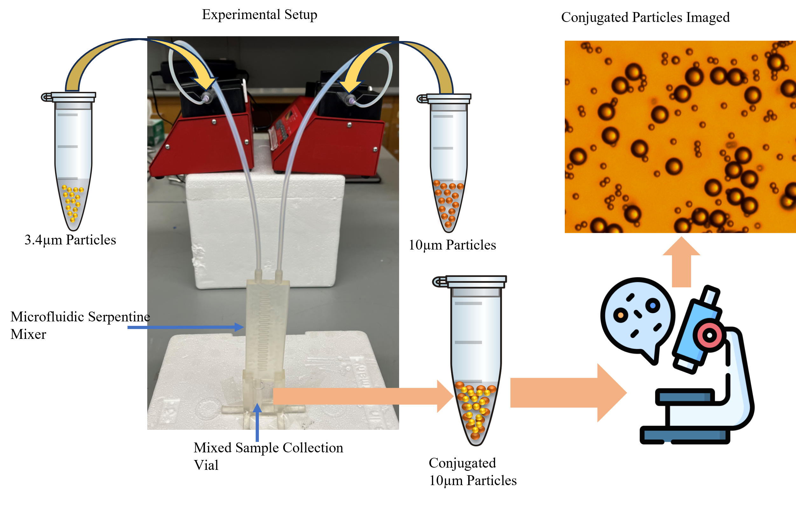
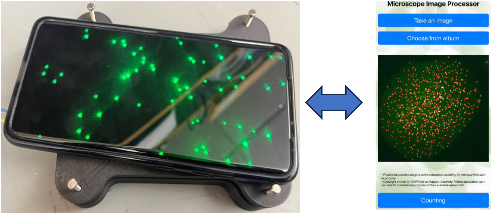
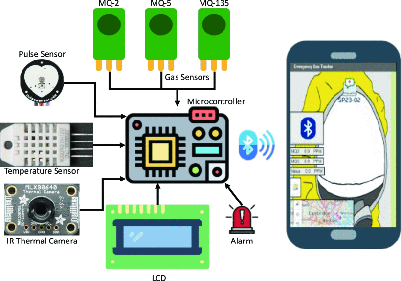
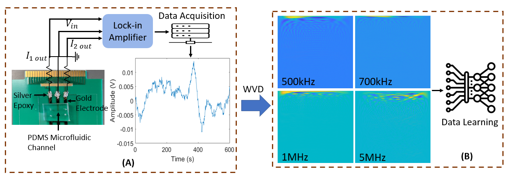

|
Muhammad Nabeel Tahir I am a Ph.D. candidate at RUTGERS University. I am currently working at LIMPH @ RUTGERS under the supervision of Dr. Umer Hassan. I specialize in integrating biomedical systems with computer vision, machine learning, signal processing, and embedded hardware design. |

|
üèÜLatest Highlights |
||||||||
|
ResearchMy research focuses on the integration of modern technologies (ML/DL), Signal Processing, and microfabrication to develop microfluidic biosensors and point-of-care devices to diagnose infectious diseases and monitor the immune system. |
|  |
Enhancing Biomarker Detection and Imaging Performance of Smartphone Fluorescence Microscopy Devices
M A. Sami, M. N. Tahir, Umer Hassan Biosensors, 2025 [paper] This study explores how signal averaging techniques enhance impedance signal quality in microfluidic cytometers used for single-cell analysis. By improving signal-to-noise ratios, the approach enables more reliable detection of biological particles in label-free biosensing applications. |
|  |
Microelectronics Differential Impedance Spectrometry System: Modeling
and Noise Analysis for Biomedical Sensing Applications
M. N. Tahir, Umer Hassan IEEE 34st Microelectronics Design & Test Symposium (MDTS), 2025 [paper] This paper presents a microelectronic impedance spectrometry system designed for biomedical sensing, focusing on modeling and noise analysis in dual and differential electrode configurations. By simulating circuit behavior and quantifying noise sources, it offers design insights for developing low-noise, high-accuracy biosensing platforms. |
|  |
An assessment of machine learning methods to quantify blood lactate from neutrophils phagocytic activity
M. N. Tahir, Kurt Wagner , Umer Hassan Scientific Reports, 2025 [paper] This study investigates how phagocytic activity of neutrophils correlates with blood lactate levels, a key biomarker for conditions like sepsis. By applying machine learning models to fluorescence microscopy data, the authors achieved up to 78% accuracy in classifying patients into high- and low-lactate risk groups. |
|  |
HIST-DIP: histogram thresholding and deep image priors assisted smartphone-based fluorescence microscopy imaging
Harshitha Govindaraju, M. N. Tahir, Umer Hassan Analyst, 2025 [paper] HIST-DIP, an unsupervised image enhancement framework combining histogram thresholding and Deep Image Prior (DIP) for smartphone-based fluorescence microscopy. It significantly improves image clarity and diagnostic accuracy without relying on external training data. |
|  |
A 3-D Printed Microfluidic Device Enabling Efficient Bioparticle Conjugation in Biological Assays
M. N. Tahir, B. K. Ashley, Umer Hassan 46th Annual International Conference of the IEEE Engineering in Medicine and Biology Society (EMBC), 2024 [paper] Aimed to use serpentine geometry to design, develop, and fabricate the micromixer as an assistive device for bioparticle conjugation. A 96% particle conjugation efficiency was achieved in just ~3-5 minutes as compared to hours of incubation with state-of-the-art conjugation protocols. |
|  |
FluoCount: An Efficient and Accurate Cells and Bioparticles Enumeration Mobile Application for
Portable Fluorescence Microscopes
M. N. Tahir, Yongyu Xie , M. A. Sami, Umer Hassan IEEE Sensors Letters, 2024 [paper] An automated method as a mobile application with the ability to provide the bioparticle counts at the point of care by imaging human leukocytes and fluorescent microparticles. The application employs efficient image processing techniques that result in faster automated counting and reduced computational cost while providing comparable counts to industrial and academic standards. |
|  |
A wearable multipurpose toxic gas-monitoring device for industrial applications
M. N. Tahir, David Falana , K. O. Daniel, David Arevalo, Jose Guanipatin, Umer Hassan IEEE 19th International Conference on Body Sensor Networks (BSN), 2023 [paper] A wearable multi-sensor-based toxic gas detection platform with bility to detect a wide range of toxic gases and monitor the essential vital signs of industrial workers. |

|
Advancing Healthcare: Synergizing Biosensors and Machine Learning for Early Cancer Diagnosis
Mahtab Kokabi, M. N. Tahir, Darshan Singh, Mehdi Javanmard Biosensors, 2023 [paper] A comprehensive review of current biosensing technologies and developed sesnors for early cancer diagnosis with applictions of Machine Learning. |
|  |
A Time-Frequency Deep Learning Classification Model for Metal Oxide Coated Particles
M. N. Tahir, B. K. Ashley, Jianye Sui, Mehdi Javanmard,, Umer Hassan IEEE 32nd Microelectronics Design & Test Symposium (MDTS), 2023 [paper] A time-frequency representation (Wigner-Vile Distribution) WVD has been employed to transform the multifrequency electrical signal assuming spectral content in the signal will aid in identifying the bioparticle. The technique highlights the spatiotemporal features in he electrical signal and represents them in the spatial domain. A custom-designed convolutional neural network (CNN) model and two advanced deep learning models (ResNet50 and VGG16) were trained on the image data generated by the WVD. |
|
AQAFI: A bioanalytical method for automated KPIs quantification of fluorescent
images of human leukocytes and micro–nano particles
M A. Sami, M. N. Tahir, Umer Hassan Analyst, 2023 [code] [paper] A novel method for automated quality assessment of fluorescent images (AQAFI) captured using smartphone fluorescence microscopes (SFM). AQAFI utilizes novel feature extraction methods to identify and measure multiple features of interest in leukocyte and micro–nanoparticle images. |
|
|
Online, Real-time and Robust Detection and Localization of Foreign Objects on
Paper Surface using Machine Vision and Clustering
M.N. Tahir, Zubair Khalid, Adeem Aslam 28th International Conference on Mechatronics and Machine Vision in Practice (M2VIP), 2022 [paper] A platform for real-time object detection on paper surface. Developed as a product quality control system for high-speed paper manufactiring. Helped in saving 30 million PKR product quality spendings. |
ExperienceMy relevant professional and academic experience. |

|
Graduate Research Assistant
LIMPH Laboratory, Rutgers University
2022 – Present
Conducting research on biosensor design, and development. Developing new technologies for infectious disease diagnosis. Improving the accuraccies of existing biosensors through integration of machine learning and signal processing. |
|
Project Team Lead
SDSA Laboratory, Lahore University of Management Sciences
2018 – 2021
Worked on cutting edge research involving computer vision based/deep learning based video and image processing solutions for local industries and publich projects. |
Miscellanea |
Academic Service |
Reviewer, The IEEE International Conference on Computing and Machine Intelligence (ICMI) (11 Papers)
Reviewer, Journal of Neuroscience Methods (1 Paper) |
Teaching |
Digital Logic Design, EE231, Teaching Assistant, EE, Rutgers University, Summer 2025
Computer architecture and Assembly Language, EE333, Teaching Assistant, EE, Rutgers University, Summer 2025 Programming Methodology I, EE252, Summer Instructor, EE, Rutgers University, Summer 2023 Computer architecture and Assembly Language, EE333, Teaching Assistant, EE, Rutgers University, Fall 2023 Computer architecture and Assembly Language, EE333, Teaching Assistant, EE, Rutgers University, Fall 2022 |
|
Home |
Projects
↑ Back to Top |
|
|
| © 2025 Muhammad Nabeel Tahir – Greater New York City Area, United States of America |
| Design and source code from Jon Barron’s website |